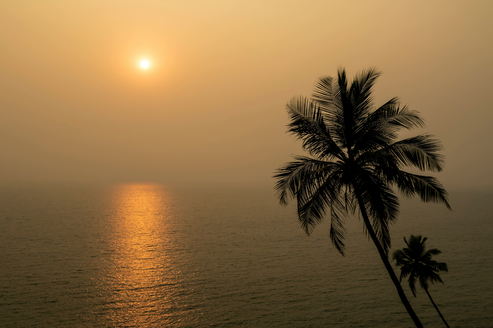

Explore the Wonders of India
"India is not a country, but a continent. It is a land of a thousand
shades, a million myths, and a billion dreams." - Raghuram Rajan
Indian tourism offers a captivating blend of ancient traditions,
natural beauty, and vibrant culture, making it a compelling
destination for travelers from around the globe. From the iconic Taj
Mahal in Agra, a symbol of timeless romance and architectural
brilliance, to the serene backwaters of Kerala, each region presents
its own unique attractions. The bustling markets of Delhi, the
historic forts of Rajasthan, and the spiritual retreats of Varanasi
highlight India's rich historical and cultural heritage. Adventure
seekers can explore the rugged Himalayas or the pristine beaches of
Goa, while those interested in wildlife can visit renowned national
parks like Ranthambore and Jim Corbett. Indian tourism also provides
an opportunity to experience diverse cuisines, festivals, and
traditional arts. With its warm hospitality and a plethora of
experiences ranging from spiritual journeys to luxurious retreats,
India offers a travel experience that is as diverse as its landscapes
and as rich as its history.
Uttarakhand : The Land of the Gods
Uttarakhand, located in northern India, is renowned for its
breathtaking natural beauty, serene landscapes, and spiritual
significance. Often referred to as "The Land of the Gods," it is a
popular destination for nature lovers, adventure enthusiasts, and
spiritual seekers. Key attractions include
-
Dehradun
The capital city of Uttarakhand, known for its pleasant climate
and picturesque surroundings. Key attractions include
-
Robber's Cave A natural cave formation with a
stream running through it, offering a unique and scenic
experience.
-
Mindrolling Monastery A Tibetan Buddhist
monastery with stunning architecture and serene ambiance.
-
Forest Research Institute A historical
institute with beautiful colonial architecture and lush green
surroundings.
-
Rishikesh
Known as the "Yoga Capital of the World," Rishikesh is a major
center for spiritual learning and yoga. Key attractions include
-
Lakshman Jhula An iconic suspension bridge
over the Ganges River, steeped in mythological significance.
-
Parmarth Niketan A renowned ashram offering
yoga and meditation retreats, and hosting the evening Ganga
Aarti.
-
Rajaji National Park A wildlife sanctuary
offering safaris and opportunities to spot elephants, tigers,
and various bird species.
-
Nainital
A charming hill station located around a picturesque lake, known
for its pleasant climate and colonial charm. Key attractions
include
-
Naini Lake A beautiful lake around which the
town is built, popular for boat rides and scenic views.
-
Naina Devi Temple A revered Hindu temple
situated on the northern shore of Naini Lake.
-
Snow View Point Offers panoramic views of the
snow-capped peaks of the Himalayas and is accessible via a
cable car.
-
Haridwar
One of the holiest cities in India, known for its ghats and
spiritual significance. Key attractions include
-
Ganga Aarti The evening ritual held at Har Ki
Pauri, where thousands gather to witness the mesmerizing
worship of the Ganges River.
-
Chandi Devi Temple A prominent Hindu temple
dedicated to Goddess Chandi, located on a hilltop with
panoramic views of the city.
-
Maya Devi Temple One of the Siddh Peeths,
dedicated to Goddess Maya, with historical and spiritual
significance.
-
Jim Corbett National Park
India’s oldest national park, famous for its rich biodiversity and
as a haven for Bengal tigers. Key attractions include
-
Safari Rides Jeep and elephant safaris offer
opportunities to spot tigers, leopards, and other wildlife in
their natural habitat.
-
Bird Watching The park is home to numerous
bird species, making it a popular spot for bird enthusiasts.
-
Corbett Museum Located in the former home of
Jim Corbett, showcasing artifacts and information about the
park’s history and wildlife.
Rajasthan : The Land of Kings

Rajasthan, known as the "Land of Kings," is one of India's most
popular tourist destinations. It is famous for its rich cultural
heritage, majestic palaces, and historical forts. Here are some
must-visit attractions in Rajasthan
-
Jaipur
The capital city of Rajasthan, also known as the "Pink City," is
home to stunning architecture and vibrant bazaars. Key attractions
include
-
Hawa Mahal The "Palace of Winds" is a
five-story structure with a unique façade featuring 953 small
windows.
-
Amber Fort A magnificent fort located on a
hilltop, known for its artistic Hindu style elements.
-
City Palace A complex of courtyards, gardens,
and buildings, reflecting the fusion of Rajput and Mughal
architecture.
-
Udaipur
Known as the "City of Lakes," Udaipur is renowned for its
picturesque lakes and palaces. Key attractions include
-
Lake Pichola An artificial lake that offers
stunning views of the surrounding hills and palaces.
-
City Palace One of the largest palaces in
Rajasthan, situated on the banks of Lake Pichola.
-
Jag Mandir A palace built on an island in
Lake Pichola, known for its exquisite architecture.
-
Jaisalmer
Known as the "Golden City," Jaisalmer is famous for its yellow
sandstone architecture and desert landscape. Key attractions
include
-
Jaisalmer Fort A UNESCO World Heritage Site,
this fort is one of the largest fully preserved fortified
cities in the world.
-
Sam Sand Dunes Located on the outskirts of
Jaisalmer, these sand dunes offer a unique desert experience
with camel rides and cultural performances.
-
Patwon Ki Haveli A collection of five
havelis, known for their intricate carvings and architecture.
Kerala : God's Own Country
Kerala, often referred to as "God's Own Country," is a state on the
southwestern Malabar Coast of India. It is known for its palm-lined
beaches, backwaters, and rich traditions. Key attractions include
-
Alleppey Famous for its houseboat cruises in the
backwaters, offering a tranquil experience of Kerala's unique
ecosystem.
-
Munnar A hill station known for its tea
plantations, rolling hills, and pleasant climate.
-
Kochi A major port city with a rich history,
known for its blend of Indian, Portuguese, Dutch, and British
influences. Key attractions include Fort Kochi, Mattancherry
Palace, and Chinese Fishing Nets.
Goa : The Pearl of the Orient

Goa, located on the western coast of India, is known for its
stunning beaches, vibrant nightlife, and Portuguese heritage. Key
attractions include
-
Beaches Goa's beaches are its biggest attraction,
with popular ones including Baga Beach, Anjuna Beach, and Palolem
Beach.
-
Historic Sites The Basilica of Bom Jesus, a
UNESCO World Heritage Site, and the Se Cathedral are prominent
examples of Portuguese architecture in Old Goa.
-
Markets The Anjuna Flea Market and Mapusa Market
are popular spots for shopping, offering a variety of local crafts
and souvenirs.
Himachal Pradesh : The Abode of Snow

Himachal Pradesh, located in the western Himalayas, is known for its
stunning mountain landscapes and adventure sports. Key attractions
include
-
Shimla The capital city, known for its colonial
architecture, pleasant climate, and scenic beauty. Key attractions
include The Ridge, Mall Road, and Jakhoo Temple.
-
Manali A popular hill station known for its
snow-capped mountains, adventure activities like paragliding and
rafting, and attractions like Solang Valley and Rohtang Pass.
-
Dharamshala Known as the residence of the Dalai
Lama, this town offers a unique blend of Indian and Tibetan
cultures. Key attractions include the Tsuglagkhang Complex and
Bhagsunag Waterfall.
Uttar Pradesh The Heartland of India

Uttar Pradesh, located in northern India, is known for its
historical, cultural, and religious significance. Key attractions
include
-
Agra Home to the Taj Mahal, one of the Seven
Wonders of the World. Other attractions include Agra Fort and
Fatehpur Sikri.
-
Varanasi One of the oldest living cities in the
world, known for its ghats along the River Ganges, Kashi
Vishwanath Temple, and vibrant cultural traditions.
-
Lucknow The capital city, known for its Mughal
and British colonial-era architecture. Key attractions include
Bara Imambara, Rumi Darwaza, and Hazratganj market.
Punjab : The Land of Five Rivers
Punjab, located in the northwestern part of India, is known for its
vibrant culture, historical sites, and lush landscapes. Key
attractions include
-
Amritsar Known for the Golden Temple, the holiest
site in Sikhism. Other notable sites include Jallianwala Bagh and
the Wagah Border.
-
Chandigarh A modern city known for its
architecture and urban planning by Le Corbusier. Key attractions
include Sukhna Lake, Rock Garden, and Rose Garden.
-
Patiala Known for its royal heritage and
historical sites like Qila Mubarak and Sheesh Mahal.